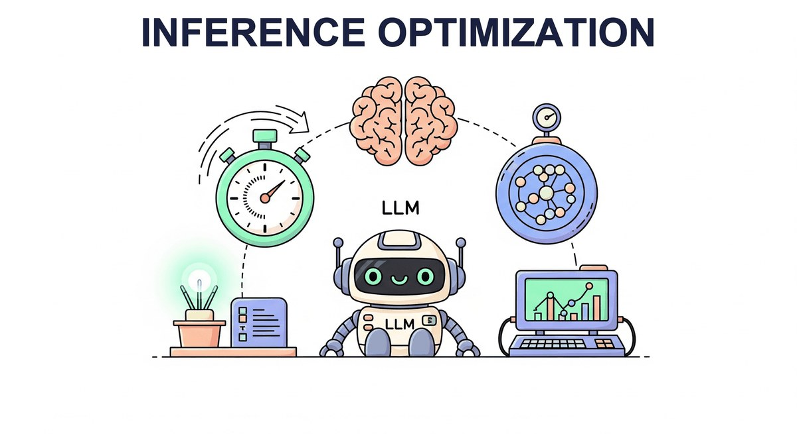

"The fastest code is the code that never runs. The fastest inference is the inference that predicts the answer before it finishes thinking."
Quant, Bandwidth-Conscious AI Agent
So far you know how LLMs are built (Chapter 7), which ones to use (Chapter 8), and how reasoning models trade compute for quality (Chapter 9). This chapter is the engineering chapter: how do you make any of them fast and cheap at inference? Quantization, KV cache management, continuous batching, speculative decoding, and the serving frameworks (vLLM, TGI, SGLang) that put it all together. By the end you will know why a 70B model can be served on consumer hardware.
Chapter Overview
Training a large language model is only half the challenge (see Chapter 06: Pretraining & Scaling Laws). The other half is making inference fast enough and affordable enough to serve real users. A 70-billion-parameter model consumes over 140 GB of GPU memory at full precision, generates tokens one at a time via autoregressive decoding, and must maintain an ever-growing cache of key/value tensors for each active request. Without optimization, serving LLMs at scale is prohibitively expensive.
This chapter covers the four pillars of inference optimization. First, quantization reduces the precision of model weights (and sometimes activations) so that models fit on fewer GPUs and run faster. Second, KV cache and memory optimization techniques such as PagedAttention, grouped-query attention, and prefix caching eliminate memory waste and boost throughput. Third, speculative decoding breaks the sequential token-generation bottleneck by drafting multiple tokens at once and verifying them in parallel. Finally, serving infrastructure frameworks like vLLM, SGLang, TGI, and TensorRT-LLM tie everything together into production-ready systems that handle thousands of concurrent requests.
By the end of this chapter, you will understand the math behind each technique, know when to apply each one, and have hands-on experience quantizing models, profiling memory, implementing speculative decoding, and deploying high-throughput inference servers.
Even the most capable model is useless if it is too slow or too expensive to serve. This chapter covers quantization, KV cache optimization, speculative decoding, and other techniques that determine whether your LLM application can meet real-world latency and cost requirements in production (Part VIII).
- Explain the mathematics of absmax, zero-point, and per-group quantization; apply GPTQ, AWQ, and bitsandbytes to compress a 7B model to 4-bit
- Calculate KV cache memory requirements and explain how PagedAttention eliminates fragmentation
- Compare MHA, MQA, and GQA architectures (introduced in Chapter 04) and their effect on memory and throughput
- Describe prefix caching, continuous batching, TTT layers, and DeepSeek Sparse Attention
- Implement speculative decoding with rejection sampling and explain why it preserves the target distribution
- Compare EAGLE and Medusa approaches to self-speculative decoding
- Deploy and benchmark inference servers using vLLM, SGLang, TGI, and TensorRT-LLM (complementing the API-based serving covered in Chapter 13)
- Profile and optimize end-to-end latency (TTFT and TPS) under realistic workloads
Prerequisites
- Chapter 3: Transformer Architecture (attention mechanism, multi-head attention)
- Chapter 4: Decoding Strategies (autoregressive generation, sampling methods)
- Chapter 7: Modern LLM Landscape (Llama, Mistral, DeepSeek architecture details)
- Basic familiarity with GPU memory hierarchy and CUDA concepts
- Python, PyTorch, and Hugging Face Transformers library
Sections
- 9.1 Quantization: Why, Math & Data Types Why inference is expensive, the mathematics of quantization, and the data types (INT8, INT4, NF4, FP8) used to store quantized weights. Advanced
- 9.2 Quantization: Algorithms, Practice & QAT Post-training quantization algorithms (GPTQ, AWQ, bitsandbytes), calibration, the GGUF format, and quantization-aware training. Advanced
- 9.3 KV cache & Memory Optimization The hidden memory bottleneck. Advanced
- 9.4 Speculative Decoding Breaking the one-token-at-a-time bottleneck. Advanced
- 9.5 Serving Stack & vLLM Deep Dive The LLM serving stack and a deep dive into vLLM, the most widely deployed open-source LLM serving framework. Intermediate
- 9.6 Serving Runtimes: SGLang, TGI, TensorRT & Edge SGLang, TGI, TensorRT-LLM, LMDeploy, Ollama and llama.cpp, edge inference, Triton, framework comparison, benchmarking, and disaggregated inference. Intermediate
- 9.7 Model Pruning & Sparsity Pruning sits alongside quantization (Section 9.7) and speculative decoding (Section 9.7) as one of the three main levers for making LLM inference faster and cheaper. Advanced
- 9.8 Test-Time Compute & Reasoning Models Every optimization technique in this chapter so far has focused on making inference faster and cheaper: quantization reduces memory, pruning removes weights, speculative decoding parallelizes... Advanced
- 9.9 GPU Kernel Programming for LLM Optimization The performance of LLM inference is ultimately determined by how efficiently we use GPU hardware. Advanced
What's Next?
Next: Chapter 10: Interpretability & Mechanistic Understanding. You can now run a model fast; can you explain what it is doing? Chapter 10 cracks the black box with probing classifiers, attention analysis, mechanistic circuits, and sparse autoencoders, the techniques that let researchers point at specific neurons and say "this one fires on indirect-object identification". Interpretability is also the foundation Part X will need when we audit models for safety.